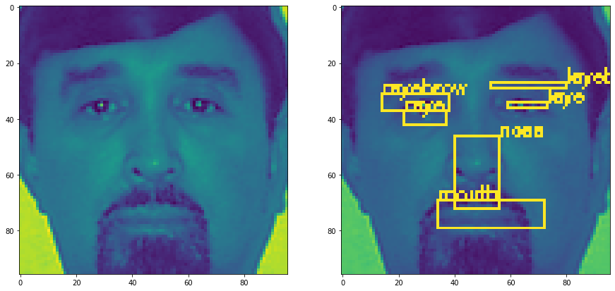

Project for IYSE 6740 (Machine Learning) at Georgia Tech
Facial recognition was first proven as a viable biometric in the 1960’s by Woodrow Wilson Bledsoe[1]. Bledsoe’s system was a manual process which used a RAND tablet to input vertical and horizontal coordinates on a grid using a stylus [2]. Once the coordinates for eyes, hairline, mouth, and nose were recorded into the database, the program could then return an image which most resembled the profile. In the late 1980’s, Sirovich and Kirby applied a linear algebra method called Eigenface to improve these procedures which has laid the foundation to the first automatic facial recognition software[2]. Today, with the use of neural networks, facial recognition has evolved to the gold standard for security and is used to identify criminals in a crowd or simply unlocking your cell phone. We are building a similar program which uses a Kaggle dataset to localize facial features such as eyebrows, eyes, nose, and mouth with bounding boxes. Identifying these 6 features can open opportunities for multiple uses like detecting irregularities in the face, distinguish a human from an animal, or even create a Snapchat filter.
Dataset being used can be found on Kaggle.
Example image of training image with features overlayed:
